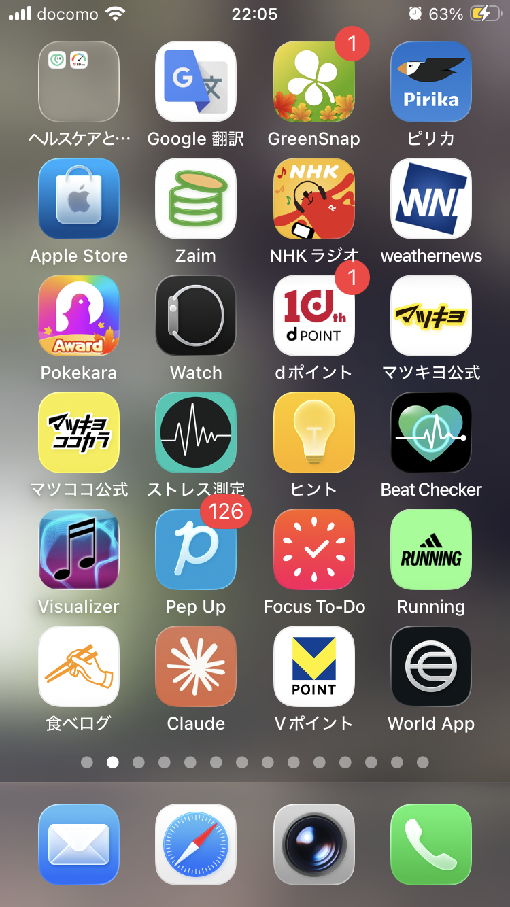
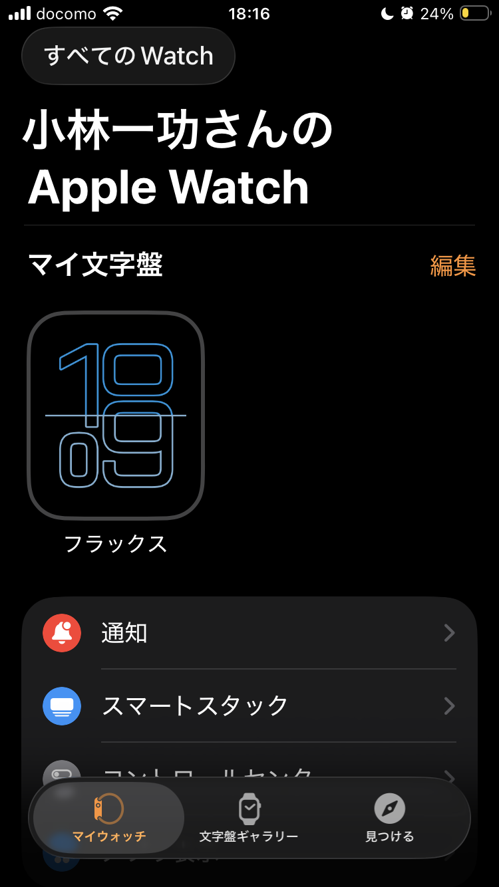
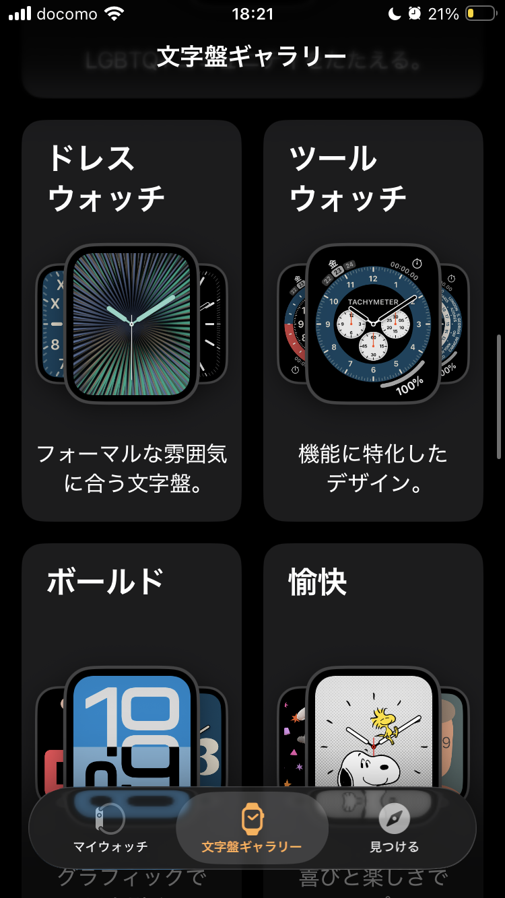
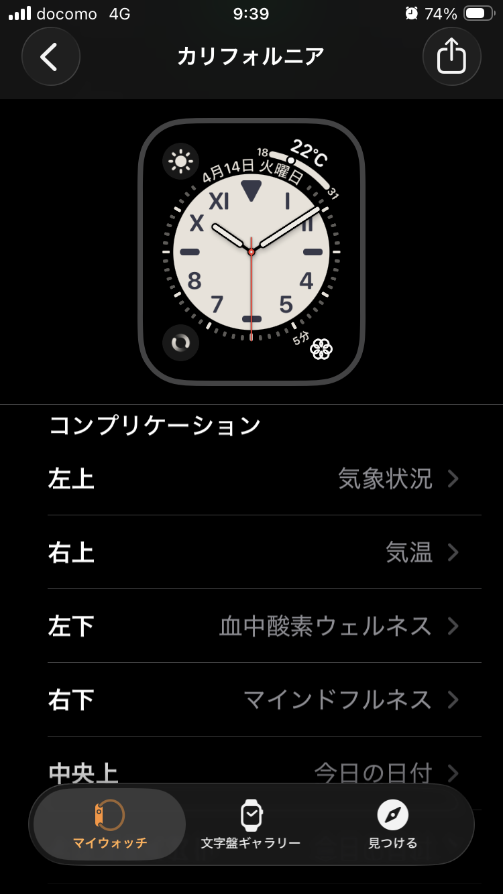
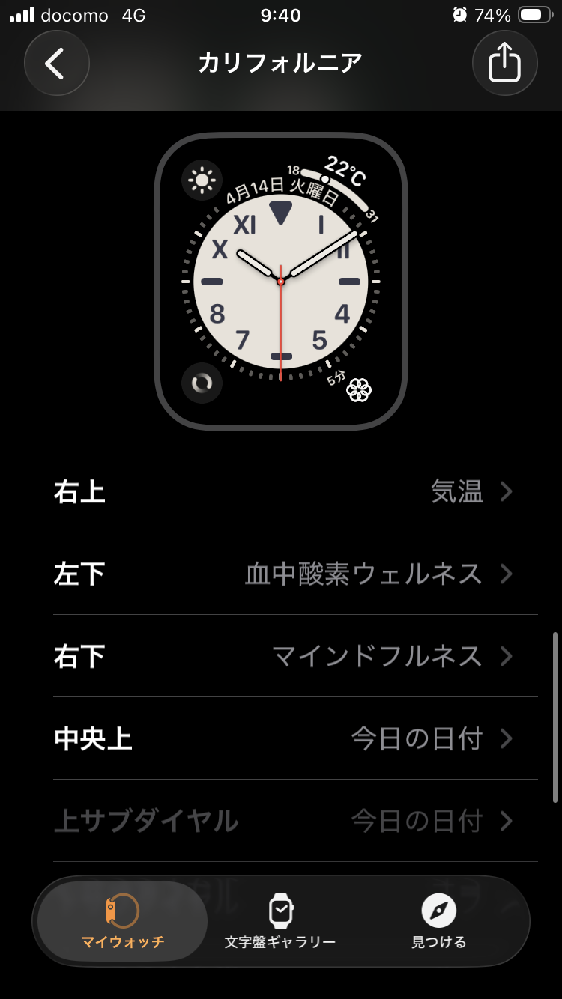
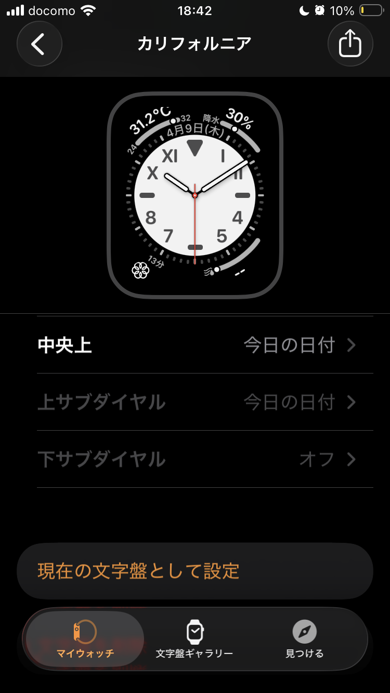
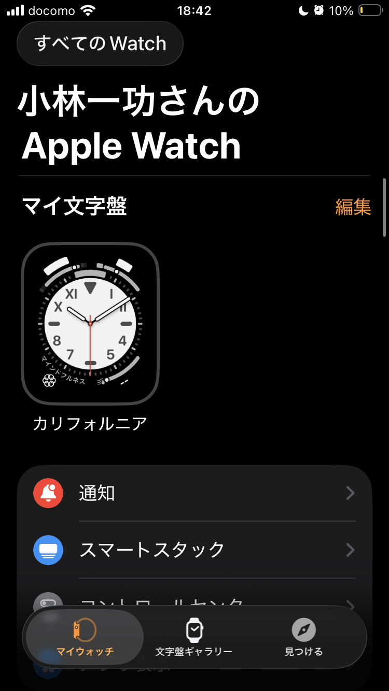

文字盤からマインドフルネスを1クリックで起動する設定手順
Apple Watchの文字盤には「コンプリケーション」という機能があり、よく使うアプリのショートカットを配置することができます。この手順では、iPhoneの「Watch」アプリを使って、文字盤から直接マインドフルネスアプリ（呼吸など）を起動できるようにする設定を解説します。
1. 文字盤ギャラリーを開く
- iPhoneで「Watch」アプリを開き、画面下部のメニューから「文字盤ギャラリー」をタップします。



2. 文字盤を選択する
- 表示された一覧から、お好みの文字盤を選択します。ここでは例として「カリフォルニア」を選択して説明します。
3. コンプリケーションに「マインドフルネス」を設定する
- 選択した文字盤の設定画面を下へスクロールし、「コンプリケーション」の項目を表示します。
- ショートカットを配置したい位置（例：「右下」など）をタップし、アプリのリストの中から「マインドフルネス」を選択します。


4. 現在の文字盤として設定する
- 設定が完了したら、画面を下までスクロールして「現在の文字盤として設定」をタップします。
- 「マイウォッチ」タブの「マイ文字盤」に追加され、自動的にApple Watch本体の文字盤も変更されます。


5. 文字盤からワンクリックで起動する
- Apple Watchの画面を見ると、設定した位置（右下）にマインドフルネスのアイコンが表示されています。
- このアイコンを指でタップするだけで、ホーム画面からアプリを探す手間なく、すぐにマインドフルネスの画面を開き「呼吸」を開始することができます。